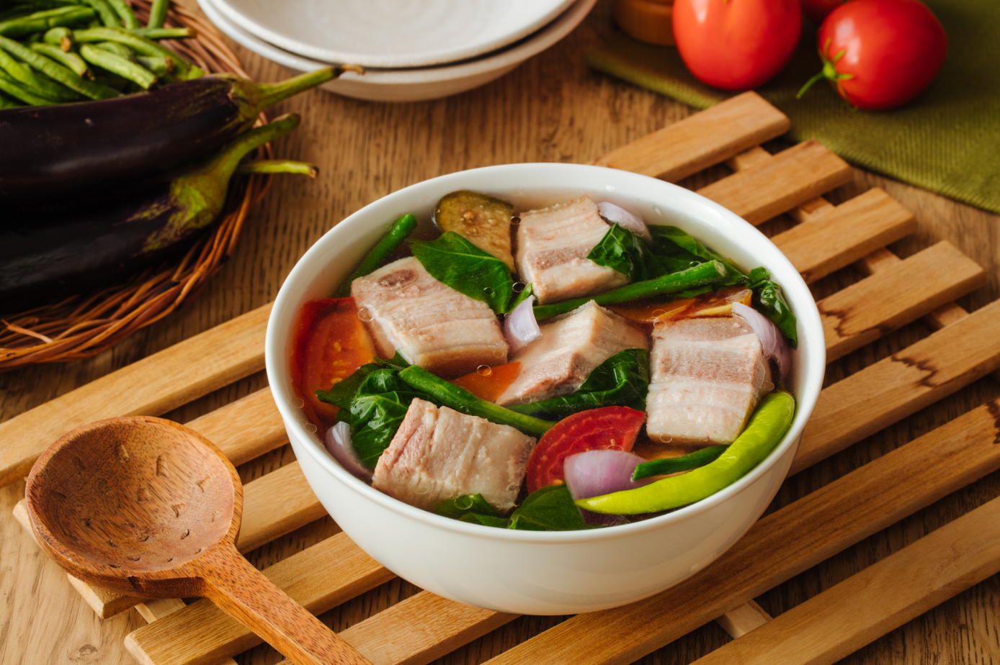
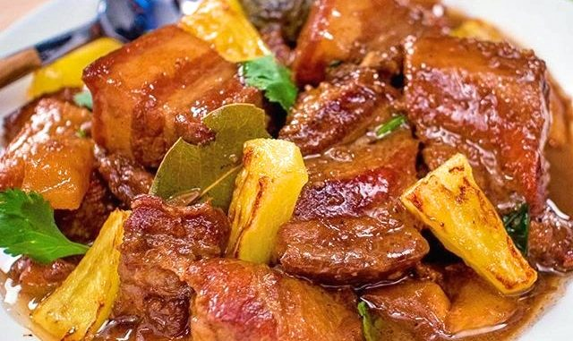
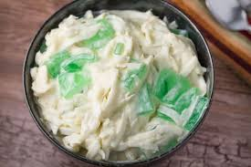
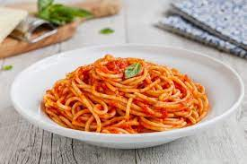
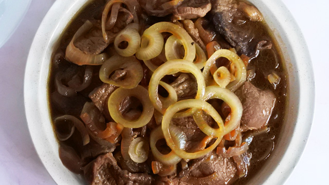
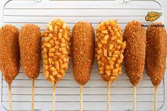

My Top 10 Favorite Foods
Sinigang
Sinigang is a Filipino soup or stew characterized by its sour and savoury taste. It is most often associated with tamarind, although it can use other sour fruits and leaves as the souring agent. It is one of the more popular dishes in Filipino cuisine.
Adobo
Philippine adobo is a popular Filipino dish and cooking process in Philippine cuisine that involves meat, seafood, or vegetables marinated in vinegar, soy sauce, garlic, bay leaves, and black peppercorns, which is browned in oil, and simmered in the marinade.
Ice Cream

Ice cream is a sweetened frozen food typically eaten as a snack or dessert. It may be made from milk or cream and is flavoured with a sweetener, either sugar or an alternative, and a spice, such as cocoa or vanilla, or with fruit such as strawberries or peaches.
Buko Salad
Buko salad, usually anglicized as young coconut salad, is a Filipino fruit salad dessert made from strips of fresh young coconut with sweetened milk or cream and various other ingredients. It is one of the most popular and ubiquitous Filipino desserts served during celebrations and fiestas.
Spaghetti
Spaghetti is a long, thin, solid, cylindrical pasta. It is a staple food of traditional Italian cuisine. Like other pasta, spaghetti is made of milled wheat and water and sometimes enriched with vitamins and minerals. Italian spaghetti is typically made from durum wheat semolina.
French Fries

French fries, chips, finger chips, french-fried potatoes, or simply fries, are batonnet or allumette-cut deep-fried potatoes, originating from either Belgium or France. They are prepared by cutting the potato into even strips, then drying and frying it, usually in a deep fryer.
Beef Steak
A beefsteak, often called just steak, is a flat cut of beef with parallel faces, usually cut perpendicular to the muscle fibers. In common restaurant service a single serving has a raw mass ranging from 120 to 600 grams. Beef steaks are usually grilled, pan-fried, or broiled.
Hamburger

A hamburger is a food consisting of fillings —usually a patty of ground meat, typically beef—placed inside a sliced bun or bread roll.
Corndog
A corn dog is a sausage on a stick that has been coated in a thick layer of cornmeal batter and deep fried. It originated in the United States and is commonly found in American cuisine.